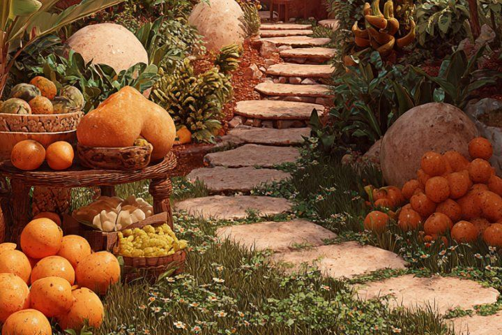

Urban Farming Workshops
Hands-on sessions teaching residents how to grow vegetables and herbs in small urban spaces.
Learn about our workshopsGreenReach Community Garden empowers Johannesburg neighbourhoods through sustainable urban gardening, hands-on education and food security. Join us in growing greener, healthier communities.

Hands-on sessions teaching residents how to grow vegetables and herbs in small urban spaces.
Learn about our workshopsLearn how to compost kitchen waste and turn it into nutrient-rich soil for the garden.
Learn about compostingWorkshops on healthy eating and cooking affordable meals with fresh garden produce.
Learn about nutrition classesLoading upcoming events...
Short on space? These five vegetables thrive in containers and small beds across the Highveld.
Turn kitchen scraps and garden waste into dark, crumbly compost with a simple home routine.
Sarah has volunteered with GreenReach for two years, teaching sustainable gardening to neighbours of every age.
Whether you can spare a few hours or sponsor a garden bed, there is a place for you at GreenReach.